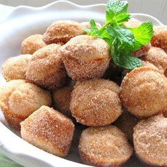

Donut Muffin Recipe

Description
Mini muffins that taste just like cinnamon sugar doughnut holes! The secret ingredient is nutmeg.
Ingredients
- ½ cup white sugar
- ¼ cup margarine, melted
- ¾ teaspoon ground nutmeg
- ½ cup milk
- 1 teaspoon baking powder
- 1 cup all-purpose flour
- ¼ cup margarine, melted
- ½ cup white sugar
- 1 teaspoon ground cinnamon
Steps
- Preheat oven to 375 degrees F (190 degrees C). Grease 24 mini-muffin cups.
- Mix 1/2 cup sugar, 1/4 cup margarine, and nutmeg in a large bowl. Stir in the milk, then mix in the baking powder and
flour until just combined. Fill the prepared mini muffin cups about half full.
- Bake in the preheated oven until the tops are lightly golden, 15 to 20 minutes.
- While muffins are baking, place 1/4 cup of melted margarine in a bowl. In a separate bowl, mix together 1/2 cup of sugar
with the cinnamon. Remove muffins from their cups, dip each muffin in the melted margarine, and roll in the
sugar-cinnamon mixture. Let cool and serve.